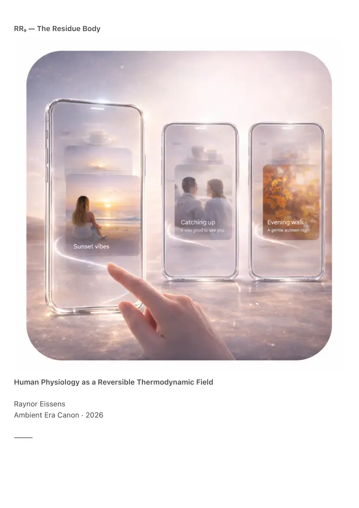

PDF page 1
RR₉ — The Residue Body
Human Physiology as a Reversible Thermodynamic Field
Raynor Eissens
Ambient Era Canon · 2026
⸻

PDF page 2
Abstract
RR₉ formalizes the body as a residue-based thermodynamic system within the Ambient Era
Canon. It offers a field architecture that complements anatomical and biochemical description by
focusing on reversible regulation: gradients, dissipation cycles and coherent residue patterns
through which physiology, affect and movement continuously stabilize, drift and resolve.
The residue body is not treated as a collection of parts nor as a fixed mechanical machine. It is
modeled as a living thermodynamic surface through which dissipation, coherence, stress
recovery, regeneration rhythms, aura output, interpersonal coupling and environmental
modulation continuously flow.
RR₉ integrates ΔR physiology, chromatic body states, tension residues, touch coherence,
metabolic drift, embodied dissipation and environmental field coupling. This document
completes the Residue Suite by describing the human being not as a cognitive agent moving
through the world but as a thermodynamic field participating in it.
⸻
1. The Body Is Not Only Mechanical
Legacy framing often reduces the body to machine metaphors:
• parts and repair
• stress as contained load
• function as output
• pathology as fixed state
• identity as vessel
RR₉ introduces a complementary lens:
• nothing remains fixed without ongoing regulation
• stability is maintained through continuous dissipation
• states are dynamic and reversible within bounded capacity
• the body is flow structured by rhythms and gradients
In this model the body is not primarily a static structure.
It is regulated movement.
⸻
PDF page 3
2. The Embodied Residue Field (ERF-1)
The body as dense residue system
The body functions as:
• warmth generator
• dissipation engine
• coherence mirror
• chromatic modulator
• tension regulator
• ΔR reservoir
ERF-1 describes the body as the coupling surface between interior residue dynamics (RR₈) and
external residue systems (RR₄–RR₇). The embodied field stabilizes presence, dissolves excess
residue, returns toward baseline and resists long-term accumulation through cyclic regulation.
The body is modeled as a self-resetting field within limits.
⸻
3. ΔR Physiology (ΔR-P)
Reversible stress as vital metric
RR₈ applied ΔR to interior dynamics. RR₉ applies ΔR to embodied regulation.
ΔR expresses:
• recovery rate
• fatigue threshold
• resilience under perturbation
• immune and autonomic modulation
• metabolic coherence
• sleep depth and return-to-baseline quality
• long-horizon drift across aging timescales
High ΔR corresponds to rapid return after perturbation.
Low ΔR corresponds to prolonged turbulence and slower resolution.
In RR₉ health is defined less by peak performance and more by reversible stress capacity.
PDF page 4
⸻
4. Chromatic Physiology (CP-1)
Color as embodied thermodynamics
RR₉ links AP₁ chromatic operators to embodied regulation states:
• Red — thresholding and sympathetic readiness
• Yellow — directional intent and mobilization
• Green — equilibrium and coherent regulation
• Blue — cooling and dissipation dominance
• Pink — relational openness and coupling readiness
• Purple — structural cohesion and autonomic ordering
These signatures express through aura patterns (RR₈) but originate as embodied
thermodynamics before they become narrative interpretation.
In this model the body is chromatic before it is conceptual.
⸻
5. Tension as Residue Turbulence (TR-1)
Tension is treated as residue in motion rather than an object.
TR-1 defines tension as:
• turbulence within the embodied field
• incomplete dissipation
• ΔR overflow
• chromatic stagnation
• rhythm discontinuity
The body resolves turbulence through spontaneous regulatory actions including shaking,
sighing, warming, cooling, stretching, crying and laughter. These are modeled as dissipation
behaviors rather than symbolic signals.
⸻
PDF page 5
6. Touch and Coherence (TC-1)
Touch as field coupling
Touch is modeled not only as sensation but as thermodynamic coupling. Under supportive
contact:
• tension can dissolve more easily
• ΔR availability can increase
• chromatic drift can stabilize
• oscillatory rhythms can synchronize
• dissipation becomes smoother
In RR₉ a hug is not treated as a narrative event first.
It is treated as residue alignment.
⸻
7. Breath as ΔR Reset (BR-1)
Breath as reversible interface
Breathing regulates:
• heat and pressure
• dissipation timing
• chromatic drift
• autonomic state
• ΔR availability
RR₉ defines characteristic patterns:
• slow exhalation correlates with dissolution
• deep abdominal breathing correlates with replenishment
• sighing correlates with turbulence release
• stillness correlates with low-residue equilibrium
Breath is modeled as the primary reversible interface between field and physiology.
⸻
PDF page 6
8. Movement as Residue Flow (MV-1)
Movement is modeled as field regulation rather than mere mechanics.
Examples:
• walking — rhythm stabilization
• stretching — dissolving local tension pockets
• running — increasing kinetic dissipation
• dancing — coherence through oscillation
• rest — sedimentation and decay of residue
Movement does not only strengthen tissue.
It normalizes distribution of residue within the embodied field.
⸻
9. Pain as Residue Congestion (PR-1)
RR₉ treats pain as more than a damage signal. It includes congestion dynamics:
• trapped residue
• incomplete dissipation
• disrupted chromatic flow
• ΔR bottlenecks
This model predicts patterns often observed in lived experience:
• pain can shift with state and context
• pain intensity can amplify under turbulence
• calm and coherence can reduce perceived intensity
RR₉ frames pain as thermodynamic congestion within the embodied field while remaining
compatible with clinical interpretations of injury and pathology.
⸻
10. The Body as Ambient Device (BD-1)
RR₅ described FP₁ as ambient computation without device-centric interface. RR₉ identifies the
body as the original ambient system.
PDF page 7
The residue body:
• modulates residue
• regulates ΔR
• broadcasts aura
• stabilizes group fields
• supports reconstruction of lived continuity
• dissipates stress
• generates coherence
Technology becomes humane to the degree that it imitates embodied thermodynamics. The
residue body functions as blueprint for the Translucent Interface Layer.
⸻
11. Environmental Coupling (EC-1)
The body is never independent of place.
RR₉ converges with Residue Architecture (RR₇):
The body couples with rooms, buildings, streets, cities, devices, ambient nodes and
interpersonal fields. Coherent environments facilitate calming and dissipation. Turbulent
environments increase heat load and destabilize regulation.
Humane architecture becomes a physiological requirement rather than a luxury.
⸻
12. Canonical Definition
RR₉ defines the human body as a reversible thermodynamic residue field in which physiology,
affect, memory continuity, stress, attention and health emerge as dissipation patterns,
coherence rhythms and ΔR fluctuations rather than as fixed stored states.
The body is not a machine.
The body is not a story.
The body is a field.
⸻
PDF page 8
13. Conclusion — The Body After Reduction
Biology describes mechanism.
Medicine describes repair.
Psychology describes meaning.
Technology describes augmentation.
RR₉ describes reversible participation.
The body is an ambient system that stabilizes the world by stabilizing the self
through warmth, rhythm, dissipation and coherence.
The human being is not fixed, defined or stored.
The human being is reversible, rhythmic, dissipative, chromatic, coherent and alive.
The residue body is the first residue architecture.
All humane systems follow its grammar.